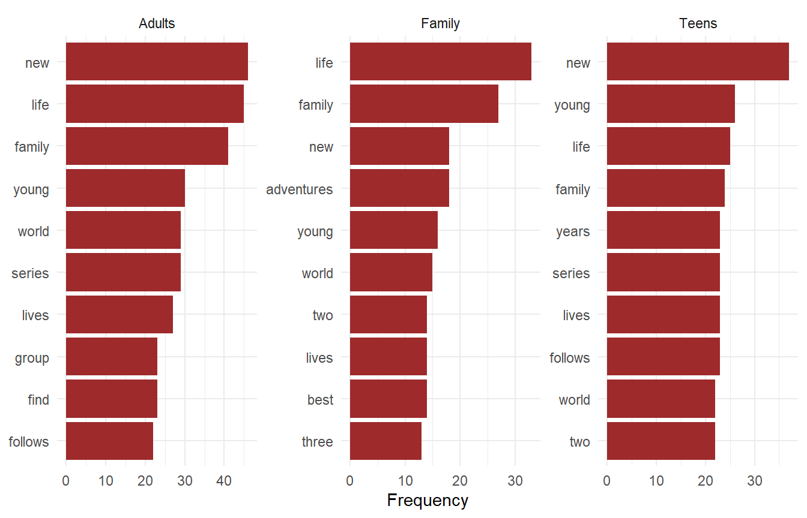
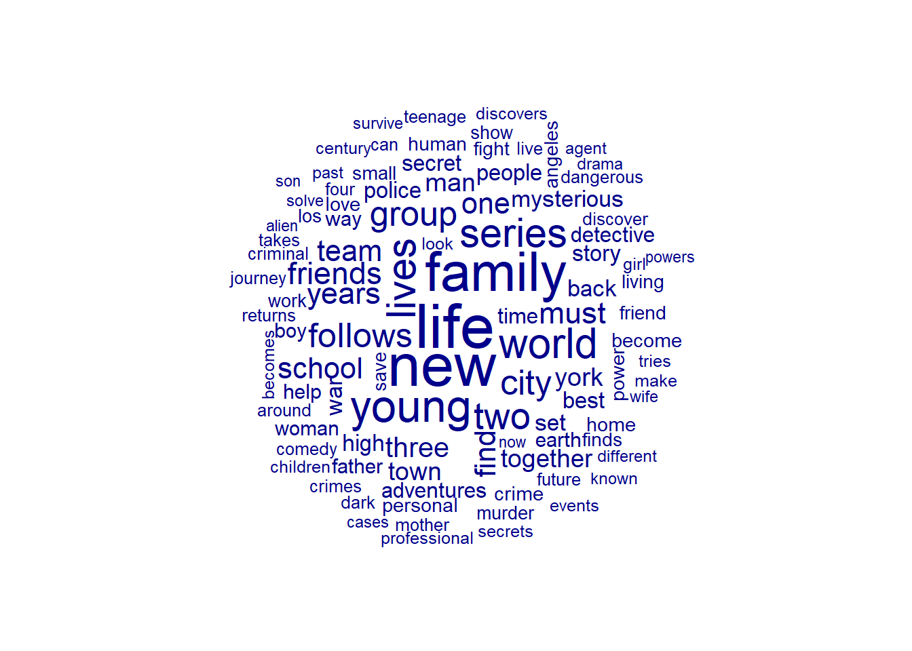
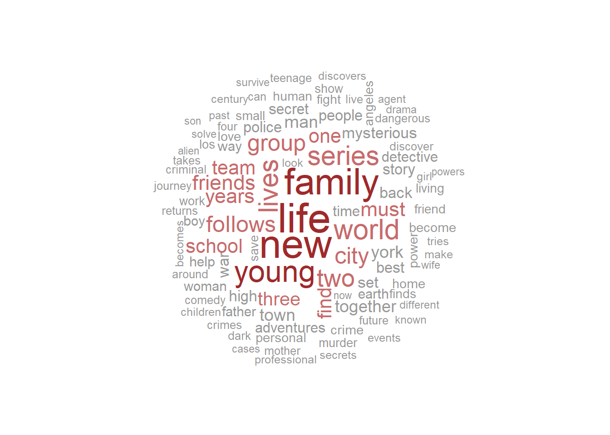
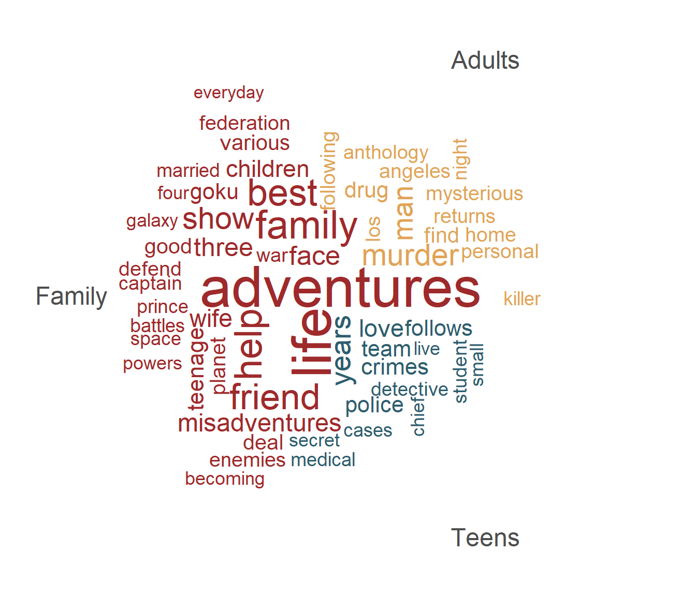

5 Feature frequencies and wordclouds
After working through Tutorial 5, you’ll be able to…
- Identify the most frequent features in a corpus
- Compare feature frequencies across groups of documents
- Visualize feature frequencies with bar charts and word clouds
1 Recap: From text to DFM
In Tutorials 1 to 4, we read in our TV series data, cleaned and preprocessed it, and turned it into a document-feature matrix (DFM). Before we can explore our data, we repeat these steps.
Today, we need two additional packages: quanteda.textstats (for frequency statistics) and quanteda.textplots (for word clouds).
Make sure to uncomment the package installation (remove the hashtag #) and run the install.packages() command if you have not yet installed these packages.
We read in the data and remove the numbers in front of the TV series titles with str_remove_all() (see Tutorial 2):
# read in the data
data <- read.csv2("data/data_tvseries.csv", encoding = "UTF-8")
data <- data |>
mutate(Title = str_remove_all(Title, "^[0-9]+[[:punct:]] "))Then, we preprocess the descriptions and create a DFM. Note one difference compared to Tutorials 3 and 4: We skip stemming. Stems like “famili” or “seri” are hard to read - and today, we want to present our results in a way that others can easily understand. This is a good example of how preprocessing decisions depend on your goal!
dfm_tv <- data |>
# create corpus
corpus(text_field = "Description") |>
# tokenization & removing punctuation, numbers, symbols
tokens(remove_punct = TRUE,
remove_numbers = TRUE,
remove_symbols = TRUE) |>
# lowercasing
tokens_tolower() |>
# removing stopwords
tokens_remove(stopwords("english")) |>
# create DFM
dfm()
dfm_tvDocument-feature matrix of: 900 documents, 5,359 features (99.72% sparse) and 5
docvars.
features
docs nine noble families fight control lands westeros ancient enemy returns
text1 1 1 1 1 1 1 1 1 1 1
text2 0 0 0 0 0 0 0 0 0 0
text3 0 0 0 0 0 0 0 0 0 0
text4 0 0 0 0 0 0 0 0 0 0
text5 0 0 0 0 0 0 0 0 0 0
text6 0 0 0 0 0 0 0 0 0 0
[ reached max_ndoc ... 894 more documents, reached max_nfeat ... 5,349 more
features ]2 Top features
2.1 The most frequent features
A first, simple way of getting to know our texts is to check which features occur most often. With topfeatures() from the quanteda package, we get the ten most frequent features:
topfeatures(dfm_tv, 10) life new family young world lives series two city group
108 103 92 74 68 65 65 57 53 53 2.2 More detailed frequencies with textstat_frequency()
The function textstat_frequency() from the quanteda.textstats package gives us more information:
-
frequency: how often a feature occurs in total -
rank: the rank of a feature by frequency -
docfreq: in how many documents a feature occurs
freq_tv <- textstat_frequency(dfm_tv, n = 15)
freq_tv feature frequency rank docfreq group
1 life 108 1 105 all
2 new 103 2 91 all
3 family 92 3 86 all
4 young 74 4 71 all
5 world 68 5 65 all
6 lives 65 6 65 all
7 series 65 6 64 all
8 two 57 8 57 all
9 city 53 9 50 all
10 group 53 9 53 all
11 follows 52 11 52 all
12 friends 47 12 47 all
13 must 45 13 45 all
14 years 45 13 45 all
15 team 43 15 42 allThe difference between frequency and docfreq matters: “new” occurs 103 times, but only in 91 documents - so some descriptions mention it more than once.
2.3 Visualizing top features
Because the result of textstat_frequency() is a data frame, we can easily visualize it with ggplot2 (part of the tidyverse). We use reorder() to sort features by frequency:
3 Comparing groups
Often, we are not only interested in the most frequent features overall, but in how texts differ across groups - e.g., across newspapers, parties, or time periods.
In our data, we could compare TV series for different audiences. We create a new variable audience based on the parental rating:
- “Adults” for series rated TV-MA (mature audiences)
- “Teens” for series rated TV-14 (teenagers aged 14 and older)
- “Family” for series rated TV-PG, TV-G, TV-Y, TV-Y7, or TV-Y7-FV (family and kids’ series)
Since the DFM stores all variables from our data as docvars, we can add this new variable directly to the DFM:
docvars(dfm_tv, "audience") <- case_when(
dfm_tv$Parental.Rating == "TV-MA" ~ "Adults",
dfm_tv$Parental.Rating == "TV-14" ~ "Teens",
dfm_tv$Parental.Rating %in% c("TV-PG", "TV-G", "TV-Y", "TV-Y7", "TV-Y7-FV") ~ "Family",
TRUE ~ NA_character_)
# how many series per group?
table(docvars(dfm_tv, "audience"))
Adults Family Teens
377 194 307 With the argument groups, textstat_frequency() calculates frequencies separately for each group:
freq_audience <- textstat_frequency(dfm_tv, n = 10, groups = audience)
freq_audience |>
head(10) feature frequency rank docfreq group
1 new 46 1 41 Adults
2 life 45 2 44 Adults
3 family 41 3 39 Adults
4 young 30 4 30 Adults
5 world 29 5 28 Adults
6 series 29 5 29 Adults
7 lives 27 7 27 Adults
8 group 23 8 23 Adults
9 find 23 8 23 Adults
10 follows 22 10 22 AdultsLet’s visualize this with one panel per group, using facet_wrap(). To sort the features within each panel, we use a small trick: We sort by a combination of feature and group (e.g., “life__Family”) and then remove the group name from the labels again with scale_y_discrete():
freq_audience |>
ggplot(aes(x = frequency,
y = reorder(paste(feature, group, sep = "__"), frequency))) +
geom_col(fill = "#9E2A2B") +
facet_wrap(~ group, scales = "free") +
scale_y_discrete(labels = function(x) gsub("__.*$", "", x)) +
labs(x = "Frequency", y = NULL) +
theme_minimal()
The top features look quite similar across groups (“life”, “new”, “family”, “young”). But there are also differences: Descriptions of family series often mention “adventures” and “best”, which do not show up among the top features of the other groups.
Be careful when comparing absolute frequencies across groups of different sizes: Our data contains 377 series for adults, but only 194 family series. A feature may occur more often in the larger group simply because there are more texts.
To compare groups of different sizes, it is better to use relative frequencies, e.g., the share of all features in a group. You can weight a DFM accordingly with dfm_weight(scheme = "prop") - see Smart Hack 1.
4 The (in)famous word cloud
4.1 Creating a word cloud
The probably most popular way of visualizing feature frequencies is the word cloud. We create it with textplot_wordcloud() from the quanteda.textplots package. The more frequent a feature, the larger it is displayed. With max_words, we set how many features are shown.
Because the position of words is random, we use set.seed() to make sure we get the same word cloud each time we run the code:
set.seed(42)
textplot_wordcloud(dfm_tv, max_words = 100)
We can also adapt the colors, e.g., to the colors of this website:
set.seed(42)
textplot_wordcloud(dfm_tv,
max_words = 100,
color = c("grey60", "#C76B6C", "#9E2A2B"))
4.2 Comparison word clouds
We can also compare groups with word clouds. For this, we first need to group our DFM with dfm_group(): All documents of the same group are combined into one “document”. Then, we use comparison = TRUE in textplot_wordcloud().
dfm_audience <- dfm_tv |>
dfm_group(groups = audience)
dfm_audienceDocument-feature matrix of: 3 documents, 5,359 features (54.93% sparse) and 1
docvar.
features
docs nine noble families fight control lands westeros ancient enemy returns
Adults 2 1 5 5 3 4 1 4 3 12
Family 1 0 3 7 1 1 0 2 2 0
Teens 0 0 1 10 3 1 0 0 2 6
[ reached max_nfeat ... 5,349 more features ]set.seed(42)
textplot_wordcloud(dfm_audience,
comparison = TRUE,
max_words = 60,
color = c("#E0A458", "#9E2A2B", "#2E5E6E"))
A comparison word cloud shows features that are particularly frequent in one group compared to the others. Here, we see that descriptions of series for adults more often mention “murder”, “killer”, or “drug”, while family series more often mention “adventures”, “best”, or “friend”.
4.3 Should you use word clouds?
Word clouds look nice - but they have important drawbacks:
- It is hard to compare the size of words precisely. Long words look more important than short words.
- The position and color of words are often arbitrary, but readers may interpret them.
- They show frequencies only, without context.
For scientific papers, bar charts (see Section 2.3) are usually the better choice. Word clouds can still be useful for a quick first impression of your data.
💡 Take-Aways
-
top features:
topfeatures(),textstat_frequency() -
visualize frequencies:
ggplot()withgeom_col()(bar charts),textplot_wordcloud()(word clouds) -
compare groups:
groupsargument intextstat_frequency(),dfm_group(),textplot_wordcloud(comparison = TRUE)
🤓 Smart Hacks
To compare groups of different sizes, we can use relative instead of absolute frequencies. First, we group the DFM. Then, dfm_weight(scheme = "prop") divides each feature frequency by the total number of features in each group:
dfm_tv |>
dfm_group(groups = audience) |>
dfm_weight(scheme = "prop") |>
textstat_frequency(n = 3, groups = audience, force = TRUE) feature frequency rank docfreq group
1 new 0.008134394 1 1 Adults
2 life 0.007957560 2 1 Adults
3 family 0.007250221 3 1 Adults
4 life 0.011652542 1 1 Family
5 family 0.009533898 2 1 Family
6 new 0.006355932 3 1 Family
7 new 0.007948443 1 1 Teens
8 young 0.005585392 2 1 Teens
9 life 0.005370569 3 1 TeensThe column frequency now contains proportions: For example, “life” accounts for about 1.2% of all features in descriptions of family series, but only for about 0.8% in descriptions of series for adults.
🎲 Quiz
📚 More tutorials on this
You still have questions? The following tutorials & papers can help you with that:
- quanteda tutorials: Statistical analysis
- quanteda tutorials: Grouping documents with dfm_group()
- R for Data Science by Wickham et al., Chapter “Data visualization”
- Grimmer, J., Roberts, M. E., & Stewart, B. M. (2022). Text as data: A new framework for machine learning and the social sciences. Princeton University Press.
📌 Test your knowledge
Task 1 (Easy🔥)
Use dfm_tv. Which are the 20 most frequent features?
Task 2 (Medium🔥🔥)
Use the TV series data.
- Create a new variable that indicates whether a series has an IMDb
Ratingof at least 8.5 (“top rated”) or below 6.0 (“worst rated”). - Visualize the most frequent features for both groups using a comparison word cloud.
Do descriptions of top-rated series differ from those of low-rated series?